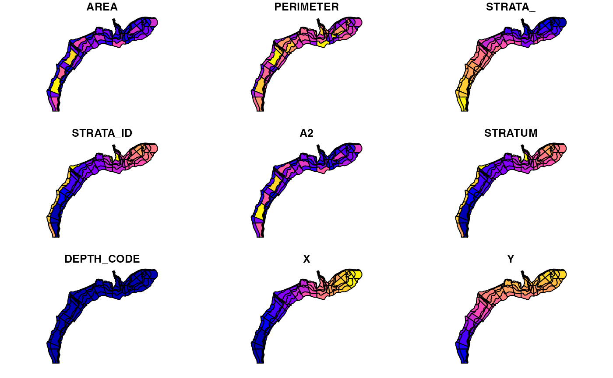

The spatial data bundled in this package are in sf
format. For the data in sf format, you can view the fields
simply by typing the name of the data set
NEFSCspatial::Shellfish_Strata
#> Simple feature collection with 97 features and 9 fields
#> Geometry type: POLYGON
#> Dimension: XY
#> Bounding box: xmin: -75.95982 ymin: 35.50142 xmax: -65.89944 ymax: 42.16817
#> Geodetic CRS: NAD83
#> First 10 features:
#> AREA PERIMETER STRATA_ STRATA_ID A2 STRATUM DEPTH_CODE X Y
#> 1 0.059 2.265 2 6662 589 6662 0 -66.51778 42.10263
#> 2 0.044 2.869 3 6661 438 6661 0 -67.83246 41.94479
#> 3 0.030 0.950 4 6652 297 6652 0 -66.90404 42.09048
#> 4 0.040 2.961 5 6651 398 6651 0 -67.78587 41.92387
#> 5 0.063 2.392 6 6710 632 6710 0 -67.38822 41.99469
#> 6 0.347 2.487 7 6640 3481 6640 0 -66.26606 41.78001
#> 7 0.129 1.563 8 6632 1293 6632 0 -66.73147 41.86695
#> 8 0.165 3.043 9 6740 1647 6740 0 -67.17305 41.64897
#> 9 0.128 3.305 10 6520 1274 6520 0 -69.31613 41.39498
#> 10 0.176 1.914 11 6720 1766 6720 0 -67.68407 41.80817
#> geometry
#> 1 POLYGON ((-67.11948 42.1301...
#> 2 POLYGON ((-67.11948 42.1301...
#> 3 POLYGON ((-67.07465 42.0782...
#> 4 POLYGON ((-67.07465 42.0782...
#> 5 POLYGON ((-67.07465 42.0782...
#> 6 POLYGON ((-66.04611 42.0563...
#> 7 POLYGON ((-66.67874 42.0522...
#> 8 POLYGON ((-67.02715 42.0232...
#> 9 POLYGON ((-69.83389 42.0467...
#> 10 POLYGON ((-67.29691 41.8896...To visualize the data simply use the plot function
plot(NEFSCspatial::Shellfish_Strata)